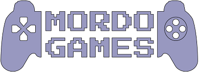

MARCA
La marca se compone por la razón social de la empresa y la figura de un joystick , la fuente de dicha razón social esta hecha con una tipografía que se asemeje a las utilizadas en las maquinas arcades (Press Start 2P).
El nombre proviene de un apodo que recibe Mordecai por parte de su mejor amigo Rigby, ese apodo es Mordo.
